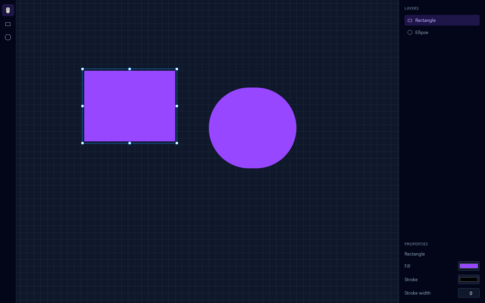

Работает без интернета
В самолёте, в поезде, в офисе без Wi-Fi: у редактора нет серверной части и ни одного запроса в сеть. Отключите интернет — он продолжит работать.
Без аккаунта · Без интернета · Нужен только Node.js
Холст с сеткой, фигуры, слои и свойства — всё в браузере. Скачайте сборку на 57 КБ, распакуйте и запустите: без аккаунта и без сети. Нужен только Node.js 18+.
Один архив для Windows, macOS и Linux — 57 КБ. В Windows — двойной клик по start.cmd, в macOS и Linux — ./start.sh в терминале. Нужен только Node.js 18+.

Что внутри
mini-figma — рабочий редактор фигур, а не картинка. Внутри модель фигур, камера с зумом и панорамой и панели, которые меняют холст в реальном времени. Ниже — тот же экран с подписями по областям.
Преимущества
Ни регистрации, ни интернета. Открыли — и рисуете. Три причины, по которым это удобно.
В самолёте, в поезде, в офисе без Wi-Fi: у редактора нет серверной части и ни одного запроса в сеть. Отключите интернет — он продолжит работать.
Запуск поднимает локальный адрес вида http://127.0.0.1:… — редактор открывается в браузере. Никакой установки приложения и никакого аккаунта.
Архив весит 57 КБ и стартует за секунды. Горячие клавиши V / R / O, зум колесом и панорама пробелом — всё под рукой.
Как пользоваться
Четыре шага — меньше минуты.
Вопросы и поддержка
Коротко о том, что обычно спрашивают перед запуском.
Да. mini-figma бесплатный, а исходный код открыт на GitHub. Ни оплаты, ни аккаунта, ни скрытых ограничений.
Само приложение — нет: распаковали и запустили. Единственное требование — Node.js 18+ для стартового скрипта.
Нет. У приложения нет серверной части: оно не отправляет данные в сеть, всё считается и живёт в вашем браузере.
Приложение собрано на ES-модулях, а браузеры блокируют их загрузку из файла (file://). Скрипт запуска поднимает крошечный локальный сервер на 127.0.0.1 и открывает редактор. Интернет для этого не нужен.
Холст с сеткой, зум 10–400% и панорама; прямоугольники и эллипсы; выделение, перетаскивание и множественное выделение; панель слоёв; заливка, обводка и её толщина.
Пока нет: фигуры живут в памяти вкладки, и после перезагрузки страницы работа не восстанавливается. Сохранение — в планах, об этом честно сказано и в README.
Это учебный мини-клон: знакомые идеи — холст, слои, свойства, выделение — в лёгком исполнении на React 18, TypeScript, Tailwind CSS 4 и Vite 6. Проект не связан с Figma, Inc.